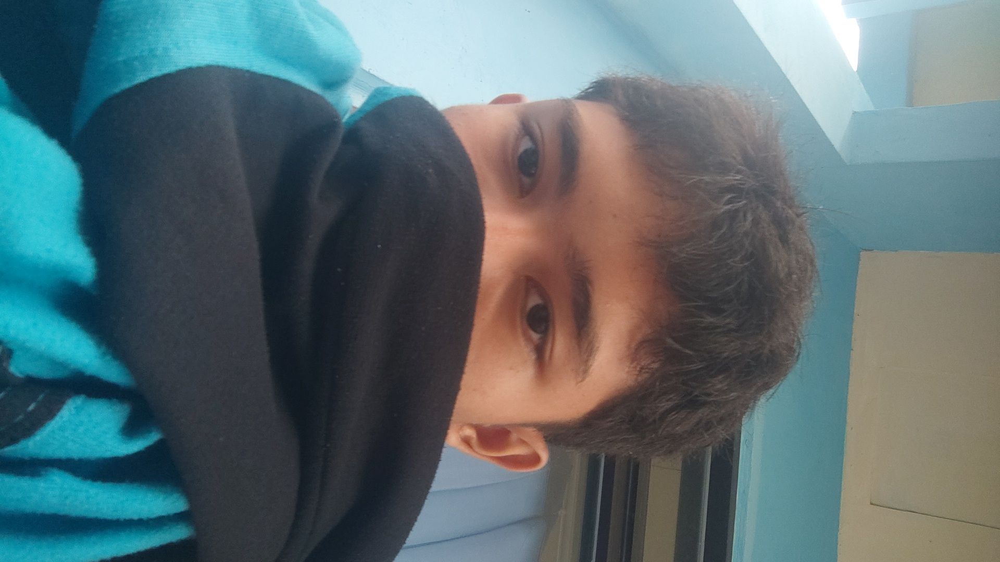

Foto
01 — Wali Kelas
Sebuah ruang laboratorium daring — tempat kabel berbicara, paket data berpindah, dan masa depan dirangkai satu byte demi satu byte.
Bukan sekadar kelas — melainkan laboratorium kecil tempat kami merakit keterampilan yang akan bertahan lebih lama dari kabel tembaga.
Cerita Singkat
XI TJKT 1 adalah keluarga kecil di balik akun @coumputerclass. Kami menghabiskan hari-hari di dua rumah belajar — Bengkel dan Ruang Jurusan — di balik kabel UTP dan di depan terminal: belajar bukan dari teori semata, melainkan dari jaringan yang benar-benar kami bangun sendiri.
Dari instalasi sistem operasi server hingga menyambung serat optik, setiap percobaan adalah langkah menuju satu tujuan: menjadi teknisi yang tidak hanya paham, tapi juga bisa.
01 — Wali Kelas
02 — Ketua Kelas
03 — Sekretaris
04 — Bendahara
0
Siswa Aktif
0
Bidang Keahlian
0
Layanan Server
0
Berbasis Praktik
Instalasi & pengelolaan sistem operasi server berbasis Debian / Linux dengan sepenuh hati.
Menghadirkan layanan yang selalu siap melayani setiap permintaan dari jaringan.
Dari tembaga UTP hingga serat optik — kami merangkai jalur data yang andal.
Menjaga sistem tetap tegak di tengah lalu lintas dunia maya yang tak kenal henti.
Menerjemahkan rute terbaik dari satu jaringan menuju jaringan lain.
Membungkus aplikasi dalam container yang ringan, cepat, dan mudah dikelola.
Merangkai sensor dan aktuator — dari kode di Wokwi hingga nyala di tangan kami.
Membangun halaman, web, hingga portfolio pendamping dengan HTML, CSS, dan JavaScript.
Mengonfigurasi perangkat MikroTik sebagai gerbang yang mengatur lalu lintas jaringan.
Menyambung serat dari titik ke titik — mulai splicing hingga ukur redaman.
Satu tahun, banyak koneksi. Ini peta perjalanan kelas kami — dari kabel pertama hingga proyek terakhir.
Perkenalan rekan sekelas, penentuan pengurus, dan penyusunan visi kelas.
Model OSI, IP addressing, dan subnetting — dari hitungan di kertas hingga kabel sungguhan.
Instalasi Debian, pengelolaan user dan group, serta administrasi sistem pertama kami.
DHCP, DNS, FTP, dan web server mulai hidup dan saling berbicara di dalam jaringan lab.
Merakit topologi mini, mengamankan jaringan, lalu mendemokannya di depan teman satu kelas.
@coumputerclass adalah arsip kelas T-J-K-T satu: dokumentasi praktik, ujian, dan kebersamaan yang tidak ingin kami lewatkan.

Pembuat situs kelas XI TJKT 1
Tangan-tangan di balik halaman ini — merangkai kode, foto, dan cerita kelas agar semua orang bisa melihat seberapa jauh kami melangkah.